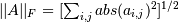

numpy.linalg.norm¶
- numpy.linalg.norm(x, ord=None, axis=None)[source]¶
Matrix or vector norm.
This function is able to return one of seven different matrix norms, or one of an infinite number of vector norms (described below), depending on the value of the ord parameter.
Parameters : x : array_like
Input array. If axis is None, x must be 1-D or 2-D.
ord : {non-zero int, inf, -inf, ‘fro’}, optional
Order of the norm (see table under Notes). inf means numpy’s inf object.
axis : {int, 2-tuple of ints, None}, optional
If axis is an integer, it specifies the axis of x along which to compute the vector norms. If axis is a 2-tuple, it specifies the axes that hold 2-D matrices, and the matrix norms of these matrices are computed. If axis is None then either a vector norm (when x is 1-D) or a matrix norm (when x is 2-D) is returned.
Returns : n : float or ndarray
Norm of the matrix or vector(s).
Notes
For values of ord <= 0, the result is, strictly speaking, not a mathematical ‘norm’, but it may still be useful for various numerical purposes.
The following norms can be calculated:
ord norm for matrices norm for vectors None Frobenius norm 2-norm ‘fro’ Frobenius norm – inf max(sum(abs(x), axis=1)) max(abs(x)) -inf min(sum(abs(x), axis=1)) min(abs(x)) 0 – sum(x != 0) 1 max(sum(abs(x), axis=0)) as below -1 min(sum(abs(x), axis=0)) as below 2 2-norm (largest sing. value) as below -2 smallest singular value as below other – sum(abs(x)**ord)**(1./ord) The Frobenius norm is given by [R39]:
References
[R39] (1, 2) G. H. Golub and C. F. Van Loan, Matrix Computations, Baltimore, MD, Johns Hopkins University Press, 1985, pg. 15 Examples
>>> from numpy import linalg as LA >>> a = np.arange(9) - 4 >>> a array([-4, -3, -2, -1, 0, 1, 2, 3, 4]) >>> b = a.reshape((3, 3)) >>> b array([[-4, -3, -2], [-1, 0, 1], [ 2, 3, 4]])
>>> LA.norm(a) 7.745966692414834 >>> LA.norm(b) 7.745966692414834 >>> LA.norm(b, 'fro') 7.745966692414834 >>> LA.norm(a, np.inf) 4 >>> LA.norm(b, np.inf) 9 >>> LA.norm(a, -np.inf) 0 >>> LA.norm(b, -np.inf) 2
>>> LA.norm(a, 1) 20 >>> LA.norm(b, 1) 7 >>> LA.norm(a, -1) -4.6566128774142013e-010 >>> LA.norm(b, -1) 6 >>> LA.norm(a, 2) 7.745966692414834 >>> LA.norm(b, 2) 7.3484692283495345
>>> LA.norm(a, -2) nan >>> LA.norm(b, -2) 1.8570331885190563e-016 >>> LA.norm(a, 3) 5.8480354764257312 >>> LA.norm(a, -3) nan
Using the axis argument to compute vector norms:
>>> c = np.array([[ 1, 2, 3], ... [-1, 1, 4]]) >>> LA.norm(c, axis=0) array([ 1.41421356, 2.23606798, 5. ]) >>> LA.norm(c, axis=1) array([ 3.74165739, 4.24264069]) >>> LA.norm(c, ord=1, axis=1) array([6, 6])
Using the axis argument to compute matrix norms:
>>> m = np.arange(8).reshape(2,2,2) >>> LA.norm(m, axis=(1,2)) array([ 3.74165739, 11.22497216]) >>> LA.norm(m[0, :, :]), LA.norm(m[1, :, :]) (3.7416573867739413, 11.224972160321824)